Latest full-dataset recheck: all cases together, source toggles and current inventory
Flatmap tracing reviewFlatmap tracing review
Source image, saved anatomical outlines and scale endpoints. Unfinished fields are NA.
fig03_left — Visible Man
PDF pp. 5–7 (printed 7083–7085), figure 4 and Table 1 explicitly distinguish nonuniform flatmap tile areas from 3-D cortical surface areas. A single grid or scale bar cannot recover a field surface area. The PDF does not provide the corresponding mesh tiles/areal Jacobian. Functional borders are composite estimates from other subjects. No new biological field area or cortical percentage is assigned from these raster pixels.
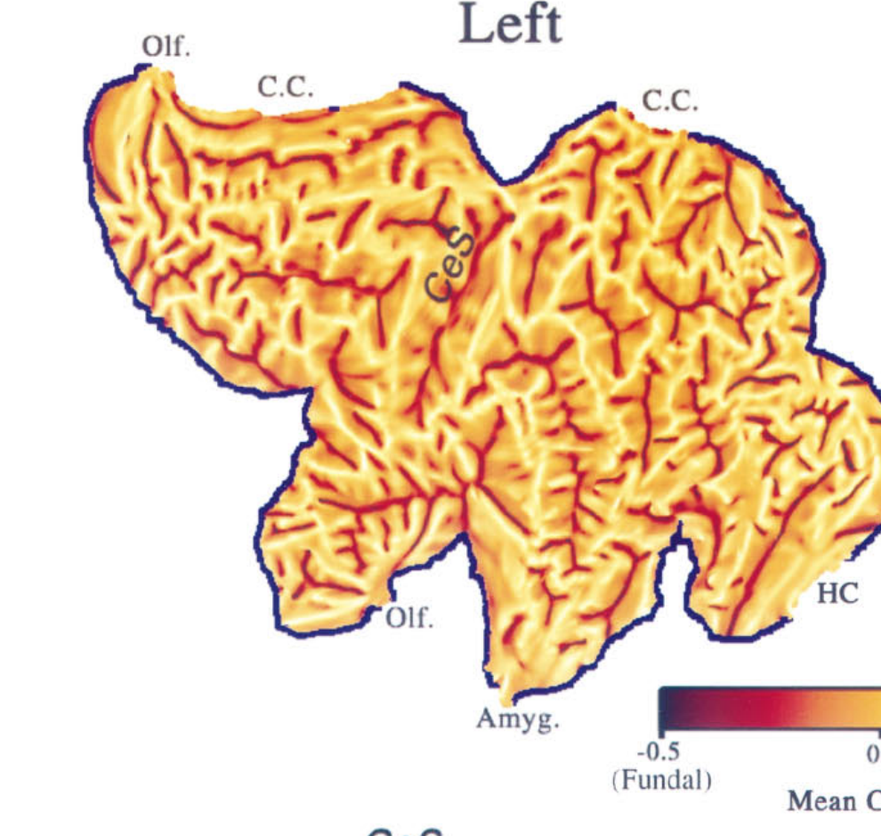

Calibrated TIFF
| Field | mm² | % neocortex | Status |
|---|
| Total neocortex | NA | NA | not_measurable |
| Frontal | NA | NA | not_measurable |
| Temporal | NA | NA | not_measurable |
| Parietal | NA | NA | not_measurable |
| Occipital | NA | NA | not_measurable |
| Limbic | NA | NA | not_measurable |
fig03_right — Visible Man
PDF pp. 5–7 (printed 7083–7085), figure 4 and Table 1 explicitly distinguish nonuniform flatmap tile areas from 3-D cortical surface areas. A single grid or scale bar cannot recover a field surface area. The PDF does not provide the corresponding mesh tiles/areal Jacobian. Functional borders are composite estimates from other subjects. No new biological field area or cortical percentage is assigned from these raster pixels.

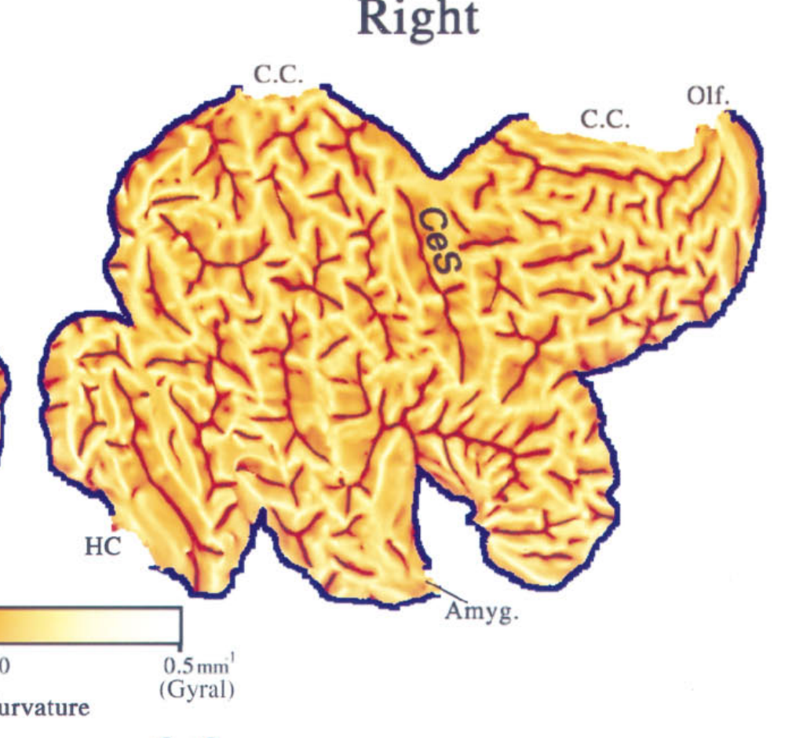
Calibrated TIFF
| Field | mm² | % neocortex | Status |
|---|
| Total neocortex | NA | NA | not_measurable |
| Frontal | NA | NA | not_measurable |
| Temporal | NA | NA | not_measurable |
| Parietal | NA | NA | not_measurable |
| Occipital | NA | NA | not_measurable |
| Limbic | NA | NA | not_measurable |
fig09_D — Visible Man
PDF pp. 5–7 (printed 7083–7085), figure 4 and Table 1 explicitly distinguish nonuniform flatmap tile areas from 3-D cortical surface areas. A single grid or scale bar cannot recover a field surface area. The PDF does not provide the corresponding mesh tiles/areal Jacobian. Functional borders are composite estimates from other subjects. No new biological field area or cortical percentage is assigned from these raster pixels.

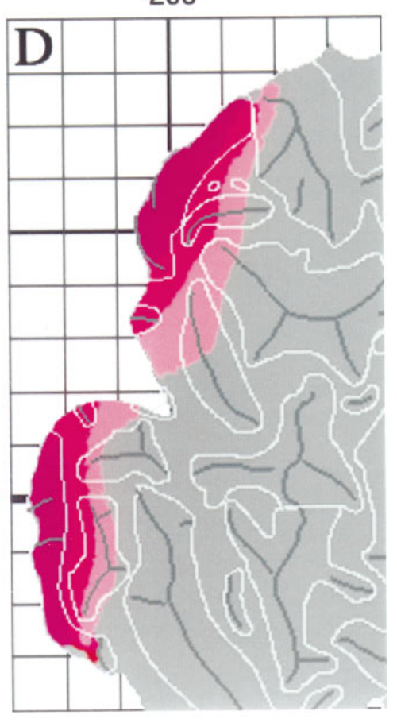
Calibrated TIFF
| Field | mm² | % neocortex | Status |
|---|
| V1 inner estimate | NA | NA | not_measurable |
| V1 most likely estimate | NA | NA | not_measurable |
| V1 outer estimate | NA | NA | not_measurable |
fig10_D — Visible Man
PDF pp. 5–7 (printed 7083–7085), figure 4 and Table 1 explicitly distinguish nonuniform flatmap tile areas from 3-D cortical surface areas. A single grid or scale bar cannot recover a field surface area. The PDF does not provide the corresponding mesh tiles/areal Jacobian. Functional borders are composite estimates from other subjects. No new biological field area or cortical percentage is assigned from these raster pixels.
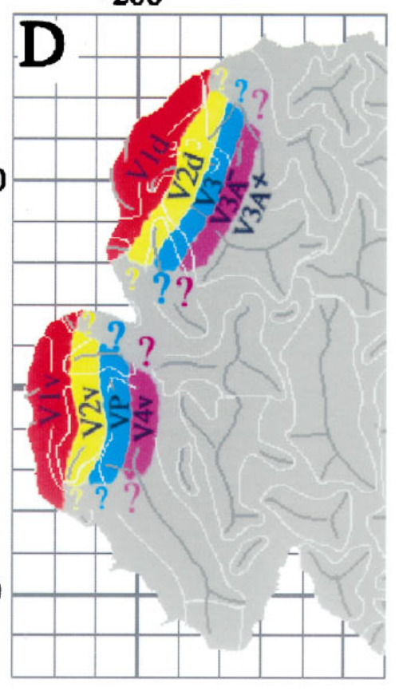

Calibrated TIFF
| Field | mm² | % neocortex | Status |
|---|
| V1 | NA | NA | not_measurable |
| V2 | NA | NA | not_measurable |
| V3 | NA | NA | not_measurable |
| VP | NA | NA | not_measurable |
| V3A | NA | NA | not_measurable |
| V4v | NA | NA | not_measurable |
fig13_C — 79-0
PDF pp. 5–7 (printed 7083–7085), figure 4 and Table 1 explicitly distinguish nonuniform flatmap tile areas from 3-D cortical surface areas. A single grid or scale bar cannot recover a field surface area. The PDF does not provide the corresponding mesh tiles/areal Jacobian. Functional borders are composite estimates from other subjects. No new biological field area or cortical percentage is assigned from these raster pixels.

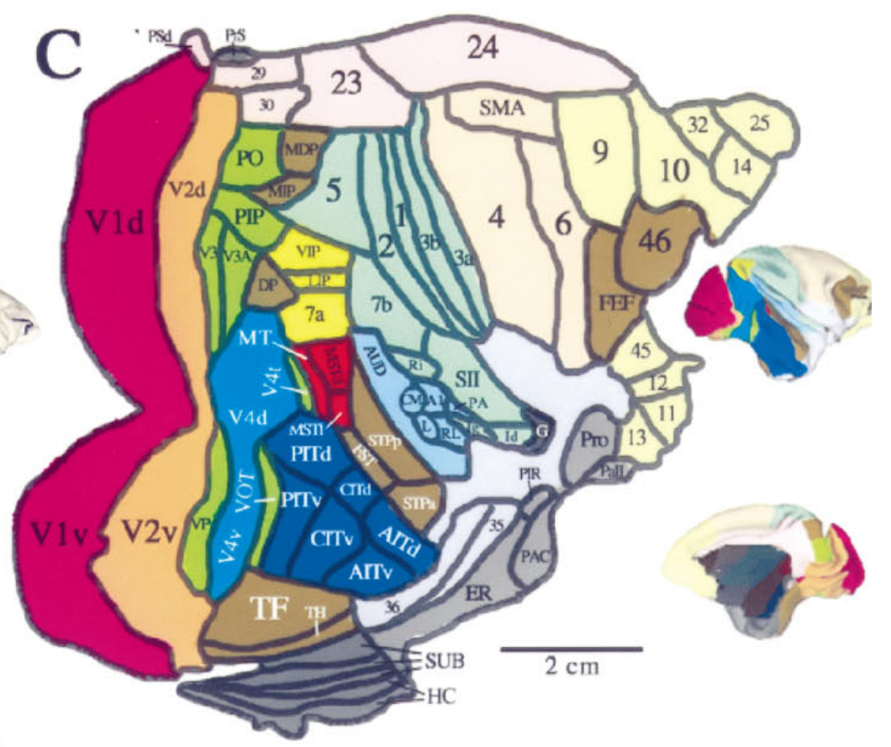
Calibrated TIFF
| Field | mm² | % neocortex | Status |
|---|
| V1 | NA | NA | not_measurable |
| V2 | NA | NA | not_measurable |
| V3 | NA | NA | not_measurable |
| V4 | NA | NA | not_measurable |
| MT | NA | NA | not_measurable |
| Other atlas fields | NA | NA | not_measurable |
All-figure source assessment
VanEssen_Drury_1997: 13 numbered figures assessed; 0 field/fragment measurements. Saved observations, where present, are provisional. No certified complete-neocortex denominator is available.
Figure inventory · Methods and limits · Measurements · Complete-field absolute-area summary
Figure 1 all — assessed_excluded
3-D atlas coordinates/section. Projected/section geometry.
PDF page2; review preview only.
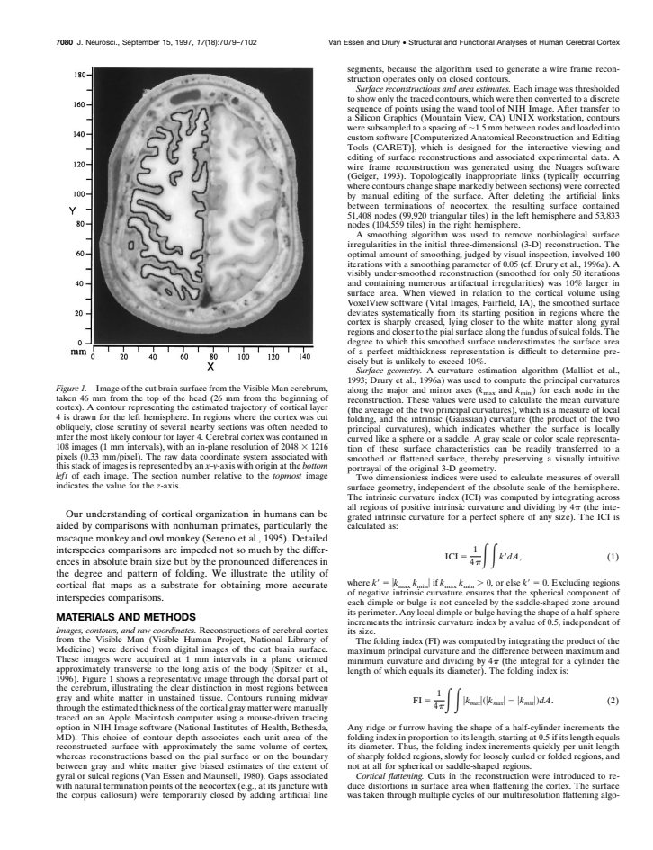
Figure 2 all — assessed_excluded
3-D cortical surface views. Perspective images cannot be planimetered for true cortical surface area.
PDF page4; review preview only.
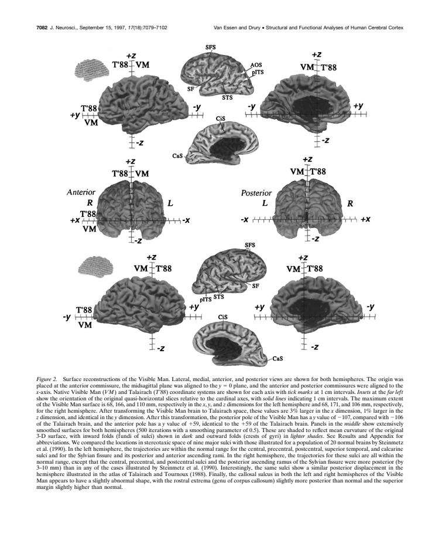
Figure 3 left atlas flatmap — assessed_not_measurable
composite_parcellation. No supported field area: 6 explicit NA entries. PDF pp. 5–7 (printed 7083–7085), figure 4 and Table 1 explicitly distinguish nonuniform flatmap tile areas from 3-D cortical surface areas. A single grid or scale bar cannot recover a field surface area. The PDF does not provide the corresponding mesh tiles/areal Jacobian. Functional borders are composite estimates from other subjects. No new biological field area or cortical percentage is assigned from these raster pixels.
Main maps: fig03_left
PDF page5; review preview only.
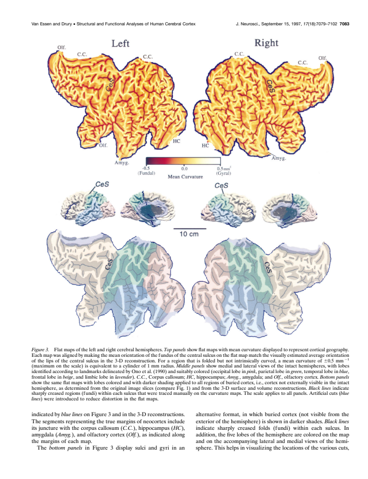
Figure 3 right atlas flatmap — assessed_not_measurable
composite_parcellation. No supported field area: 6 explicit NA entries. PDF pp. 5–7 (printed 7083–7085), figure 4 and Table 1 explicitly distinguish nonuniform flatmap tile areas from 3-D cortical surface areas. A single grid or scale bar cannot recover a field surface area. The PDF does not provide the corresponding mesh tiles/areal Jacobian. Functional borders are composite estimates from other subjects. No new biological field area or cortical percentage is assigned from these raster pixels.
Main maps: fig03_right
PDF page5; review preview only.
Figure 4 all — assessed_excluded
Intrinsic curvature and flattening distortion. Diagnostic maps and histograms document spatially varying distortion, not measurable biological field contours.
PDF page6; review preview only.
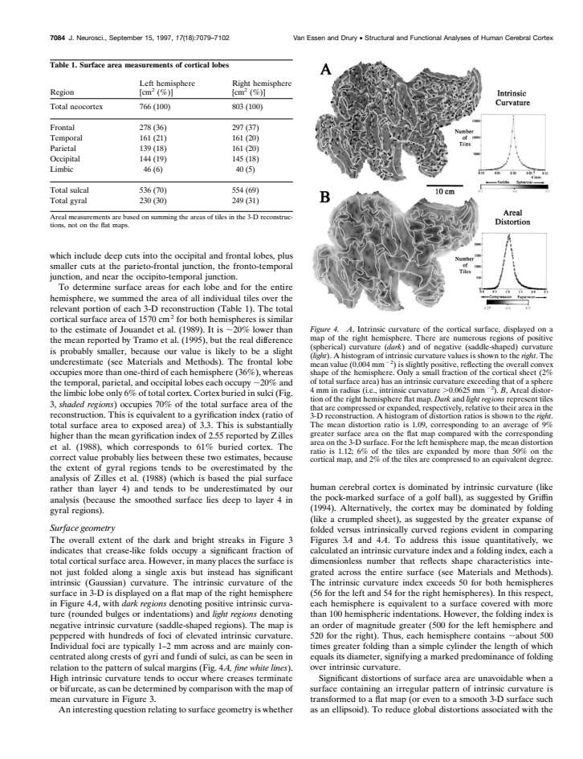
Figure 5 all — assessed_excluded
Sulcal/geographical flatmap atlas. Geographical sulci rather than complete cortical field boundaries; nonuniform area distortion.
PDF page8; review preview only.
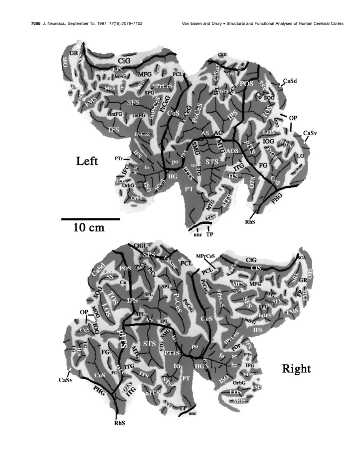
Figure 6 all — assessed_excluded
Coordinate sections. Cross sections/coordinate geometry, not field perimeters.
PDF page9; review preview only.
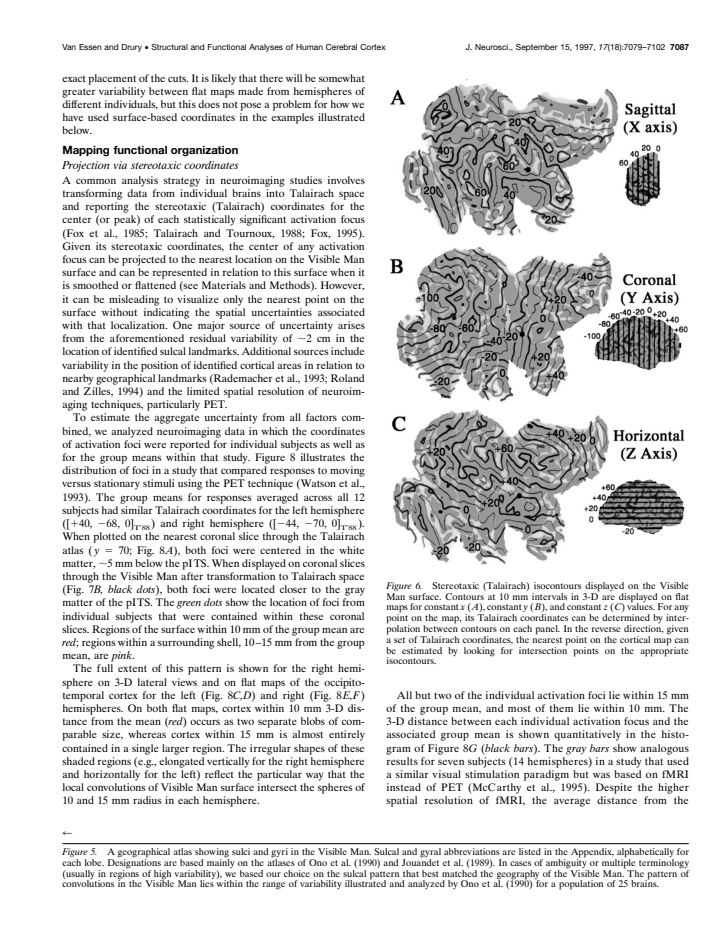
Figure 7 all — assessed_excluded
Surface coordinate atlas. Coordinates, not functional field envelopes; nonuniform flattening distortion.
PDF page10; review preview only.
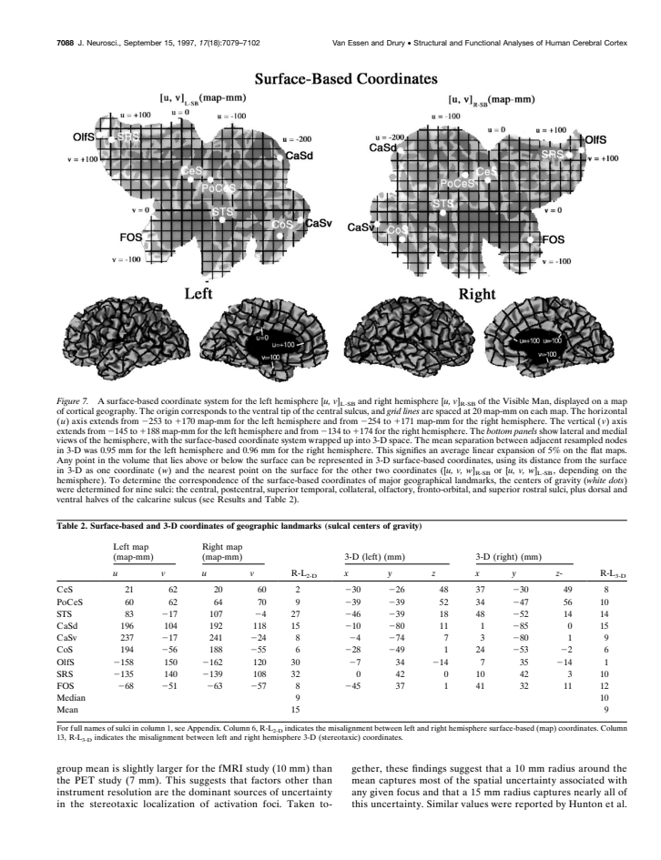
Figure 8 all — assessed_excluded
Projected activation foci and uncertainty zones. Activation foci and 10/15-mm uncertainty regions are not anatomical areal perimeters.
PDF page12; review preview only.
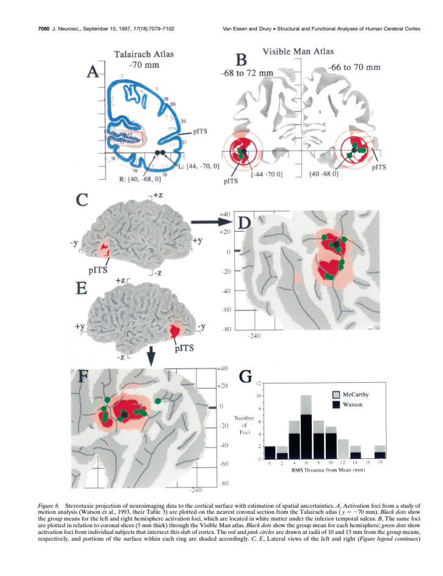
Figure 9 D: V1 uncertainty envelope — assessed_not_measurable
composite_parcellation. No supported field area: 3 explicit NA entries. PDF pp. 5–7 (printed 7083–7085), figure 4 and Table 1 explicitly distinguish nonuniform flatmap tile areas from 3-D cortical surface areas. A single grid or scale bar cannot recover a field surface area. The PDF does not provide the corresponding mesh tiles/areal Jacobian. Functional borders are composite estimates from other subjects. No new biological field area or cortical percentage is assigned from these raster pixels.
Main maps: fig09_D
PDF page13; review preview only.
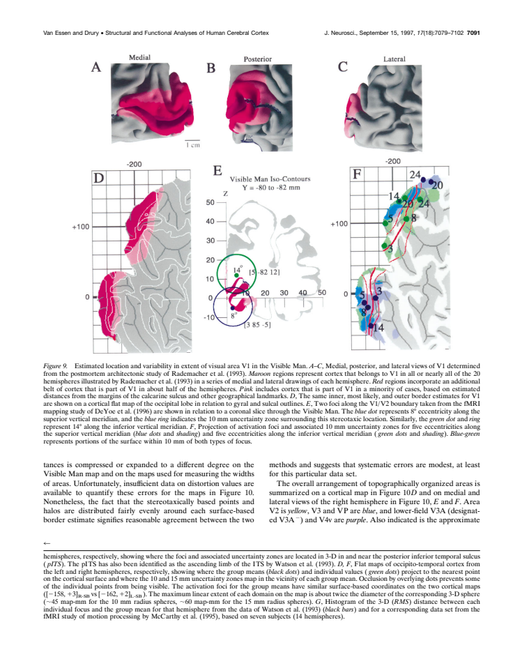
Figure 10 D: estimated retinotopic parcellation — assessed_not_measurable
composite_parcellation. No supported field area: 6 explicit NA entries. PDF pp. 5–7 (printed 7083–7085), figure 4 and Table 1 explicitly distinguish nonuniform flatmap tile areas from 3-D cortical surface areas. A single grid or scale bar cannot recover a field surface area. The PDF does not provide the corresponding mesh tiles/areal Jacobian. Functional borders are composite estimates from other subjects. No new biological field area or cortical percentage is assigned from these raster pixels.
Main maps: fig10_D
PDF page14; review preview only.
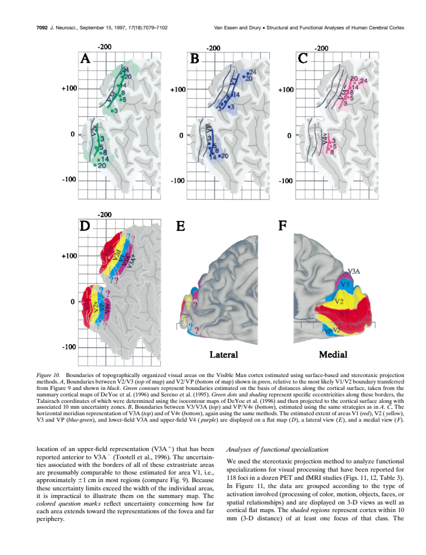
Figure 11 all — assessed_excluded
Functional activation overlays. Activation/uncertainty zones are not cortical field boundaries.
PDF page15; review preview only.
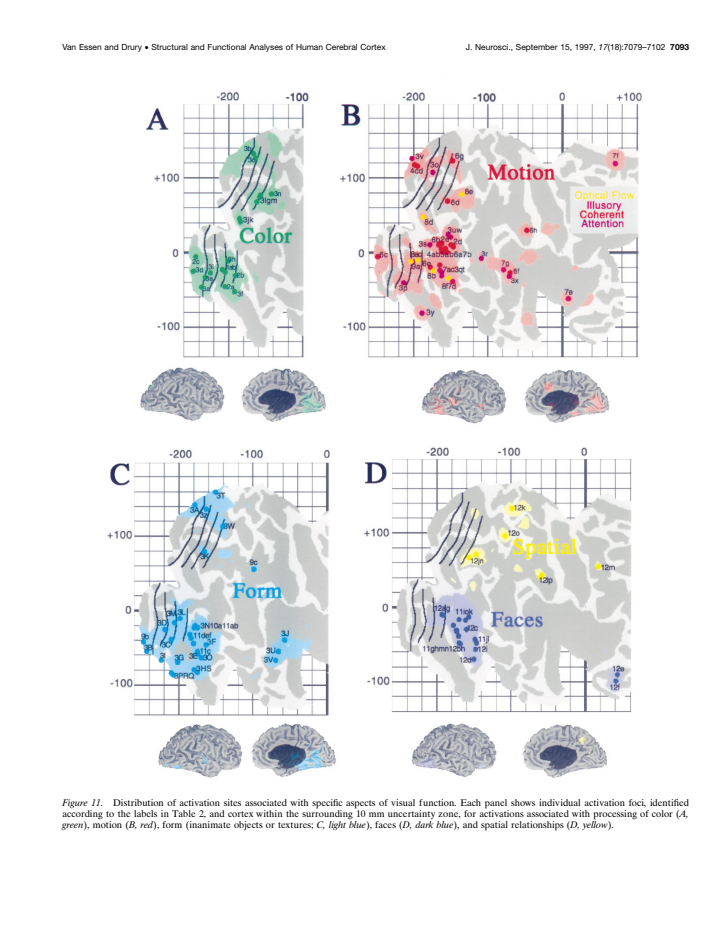
Figure 12 all — assessed_excluded
Combined functional activations. Estimated functional specialization zones are derived from foci; no observed closed areal perimeters.
PDF page16; review preview only.
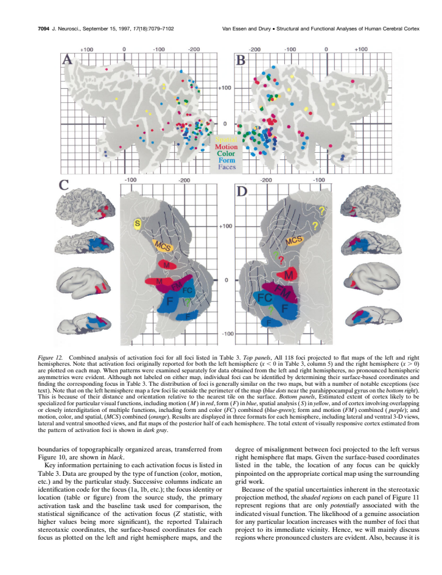
Figure 13 C: reused Felleman–Van Essen parcellation on reconstructed macaque atlas — assessed_not_measurable
composite_parcellation. No supported field area: 6 explicit NA entries. PDF pp. 5–7 (printed 7083–7085), figure 4 and Table 1 explicitly distinguish nonuniform flatmap tile areas from 3-D cortical surface areas. A single grid or scale bar cannot recover a field surface area. The PDF does not provide the corresponding mesh tiles/areal Jacobian. Functional borders are composite estimates from other subjects. No new biological field area or cortical percentage is assigned from these raster pixels.
Main maps: fig13_C
PDF page20; review preview only.
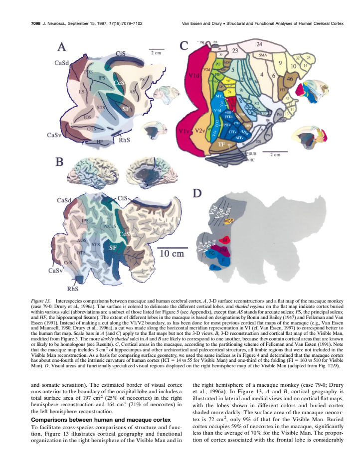
Enlarged source-toggle precision review